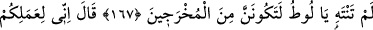

KARDEŞLERİ LÛT
ONLARA ŞÖYLE DEMİŞTİ
160. Lût kavmi de peygamberleri yalancılıkla suçladı.
161. Kardeşleri Lût onlara şöyle demişti: (Allah’a karşı gelmekten) sakınmaz
mısınız?
162. Bilin ki, ben size gönderilmiş güvenilir bir elçiyim.
163. Artık Allah’a karşı gelmekten sakının ve bana itaat edin.
164. Buna karşı sizden hiçbir ücret istemiyorum. Benim ecrimi verecek olan,
ancak âlemlerin Rabbidir.
165. Rabbinizin sizler için yarattığı eşlerinizi bırakıp da, insanlar içinden
erkeklere mi yaklaşıyorsunuz? Doğrusu siz sınırı aşmış (sapık) bir kavimsiniz!
167. Onlar şöyle dediler: Ey Lût! (Bu davadan) vazgeçmezsen, iyi bil ki, sürgün
edilmişlerden olacaksın!
168. Lût dedi ki: Doğrusu ben sizin bu işinizden tiksinmekteyim!
169. Rabbim! Beni ve âilemi, onların yapageldiklerinden (vebalinden) kurtar.
170. Bunun üzerine onu ve bütün âilesini kurtardık.
171. Ancak bir kocakarı müstesna. O, geride kalanlardan (oldu).
172. Sonra diğerlerini helâk ettik.
173. Üzerlerine öyle bir yağmur yağdırdık ki... Uyarı-lanların (fakat yola
gelmeyenlerin) yağmuru ne de kötü!